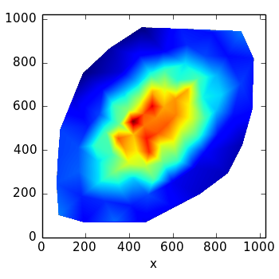

Point Density Estimation and Field Rendering¶
Many tasks in astronomy involve a set of points on a 2D plane: a distribution of stars in an image is one example. We might wish to map the density of this point distribution and plot an image of the density field. In this tutorial we’ll see how tess can accomplish this task.
We begin by constructing a mock point data set with points drawn from a bi-normal distribution:
import numpy as np
img_shape = (1024, 1024)
mean = (512., 512.)
cov = 50000. * np.array(((1., 0.5), (0.5, 1.)))
point_xy = np.random.multivariate_normal(mean, cov, 10000)
s = np.where((point_xy[:, 0] >= 0.) &
(point_xy[:, 1] >= 0.) &
(point_xy[:, 0] < img_shape[0] - 1.) &
(point_xy[:, 1] < img_shape[1] - 1.))[0]
point_xy = point_xy[s, :]
point_mass = np.ones(point_xy.shape[0])
Here we set point_mass to 1.0 for each point, though in practise this could be any weighting or attribute associated with a point (such as luminosity, or mass).
Our point distribution looks like this:

Although it is not strictly necessary to bin points when estimating a density field, doing so reduces Poisson noise. Lets construct a centroidal Voronoi tessellation so that each Voronoi cell contains a mass of 10 points. This is a two-step process of first making a set of generators by accreting points into bins with tess.point_accretion.EqualMassAccretor and then producing the centroidal Voronoi tessellation with tess.cvtessellation.CVTessellation:
from tess.point_accretion import EqualMassAccretor
from tess.cvtessellation import CVTessellation
accretor = EqualMassAccretor(point_xy, point_mass, 100.)
accretor.accrete()
generator_xy = accretor.nodes()
cvt = CVTessellation(point_xy[:, 0], point_xy[:, 1], point_mass,
node_xy=generator_xy)
node_xy = cvt.nodes
node_xy are now the (x,y) coordinates of the Voronoi tessellation nodes. cvt.node_weights gives the total mass of points contained in each Voronoi cell.
We can use this tessellation to create its dual, the Delaunay Tessellation (tess.delaunay.DelaunayTessellation), and estimate the density field with the Delaunay Tessellation Field Estimator with the tess.density.DelaunayDensityEstimator instance:
from tess.delaunay import DelaunayTessellation
from tess.density import DelaunayDensityEstimator
delaunay = DelaunayTessellation(node_xy[:, 0], node_xy[:, 1])
dtfe = DelaunayDensityEstimator(delaunay)
dens = dtfe.estimate_density((0., img_shape[1]),
(0., img_shape[0]),
cvt.node_weights)
Now dens gives the density (as in, mass per area) at each node. We can render that density field, sampled at each node, with linear interpolation using the triangular facets of the Delaunay tessellation:
del_dens_map = delaunay.render_delaunay_field(dens,
(0., img_shape[1]),
(0., img_shape[0]),
1., 1.,)
The density field looks like this:
For the full source code of this example, see scripts/demo_delaunay_density.py